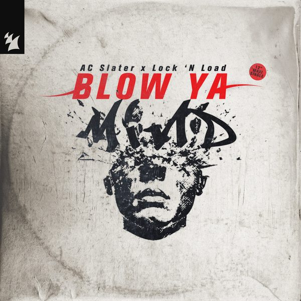
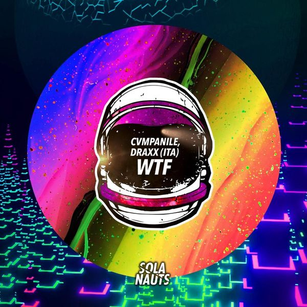

I 24 dischi
 1
Get Real HighMarten Hørger & Shift K3Y
1
Get Real HighMarten Hørger & Shift K3Y
 2
CongaJenn Morel x Provenzano x Luca Testa ft. Joelii
2
CongaJenn Morel x Provenzano x Luca Testa ft. Joelii
 3
Beggin'Aluna, Chris Lake
3
Beggin'Aluna, Chris Lake
 4
Get BusyKevin McKay
4
Get BusyKevin McKay
 5
SweatEssel
5
SweatEssel
 6
Live Without LoveShouse x David Guetta
6
Live Without LoveShouse x David Guetta

7 Blow Ya MindTimmy Trumpet, Lee Cabrera & Bleech vs Lock 'N Load 8
All About URSCL & Marco Nobel
8
All About URSCL & Marco Nobel
 9
That Night In MilanFederico Gardenghi
9
That Night In MilanFederico Gardenghi
 10
Where'd You GoFuture Class, Frozt
10
Where'd You GoFuture Class, Frozt
 11
MiaFunkin Matt
11
MiaFunkin Matt
 12
Early OwlDirty Sound Boys & KT2
12
Early OwlDirty Sound Boys & KT2
 13
Lluvia En ColombiaGregor Salto & Fight Clvb
13
Lluvia En ColombiaGregor Salto & Fight Clvb
 14
With YouSmack & KDH
14
With YouSmack & KDH
 15
B2 The Old SchoolFTampa & The Otherz
15
B2 The Old SchoolFTampa & The Otherz
 16
I Wanna See You MoveDJ Ross, Chakra Blue
16
I Wanna See You MoveDJ Ross, Chakra Blue
 17
Living On VideoMike Williams ft. Dtale
17
Living On VideoMike Williams ft. Dtale
 18
Crowd ControlMoguai x Busy Signal x Lohrasp Kansara
18
Crowd ControlMoguai x Busy Signal x Lohrasp Kansara
 19
All I NeedJulian Cross ft. Afrojack
19
All I NeedJulian Cross ft. Afrojack
 20
Green Washer (Tony Romera Rmx)Joachim Pastor
20
Green Washer (Tony Romera Rmx)Joachim Pastor
 21
Rhyme Dust (Nic Fanciulli Rmx)MK & Dom Dolla
21
Rhyme Dust (Nic Fanciulli Rmx)MK & Dom Dolla
 22
BelieveMinow
22
BelieveMinow
 23
Feel The SameMartin Ikin & The Melody Men
23
Feel The SameMartin Ikin & The Melody Men

24 WTFCvmpanile, Draxx (Ita)La tracklist
- 1 Get Real High Marten Hørger & Shift K3Y Tomorrowland Music
- 2 Conga Jenn Morel x Provenzano x Luca Testa ft. Joelii Ego
- 3 Beggin' Aluna, Chris Lake Black Book Records/Astralwerks
- 4 Get Busy Kevin McKay Glasgow Underground
- 5 Sweat Essel Toolroom Records
- 6 Live Without Love Shouse x David Guetta Hell Beach
- 7 Blow Ya Mind Timmy Trumpet, Lee Cabrera & Bleech vs Lock 'N Load Armada Music
- 8 All About U RSCL & Marco Nobel Armada Music
- 9 That Night In Milan Federico Gardenghi Armada Music
- 10 Where'd You Go Future Class, Frozt Hexagon
- 11 Mia Funkin Matt Hexagon
- 12 Early Owl Dirty Sound Boys & KT2 Hexagon
- 13 Lluvia En Colombia Gregor Salto & Fight Clvb Spinnin' Records
- 14 With You Smack & KDH MAXXIMIZE
- 15 B2 The Old School FTampa & The Otherz Hysteria Records
- 16 I Wanna See You Move DJ Ross, Chakra Blue Bang Record
- 17 Living On Video Mike Williams ft. Dtale Spinnin' Records
- 18 Crowd Control Moguai x Busy Signal x Lohrasp Kansara PUNX Records
- 19 All I Need Julian Cross ft. Afrojack Wall Recordings
- 20 Green Washer (Tony Romera Rmx) Joachim Pastor Armada Music
- 21 Rhyme Dust (Nic Fanciulli Rmx) MK & Dom Dolla Columbia
- 22 Believe Minow Drop Low Records
- 23 Feel The Same Martin Ikin & The Melody Men Ultra Records
- 24 WTF Cvmpanile, Draxx (Ita) Sola Nauts